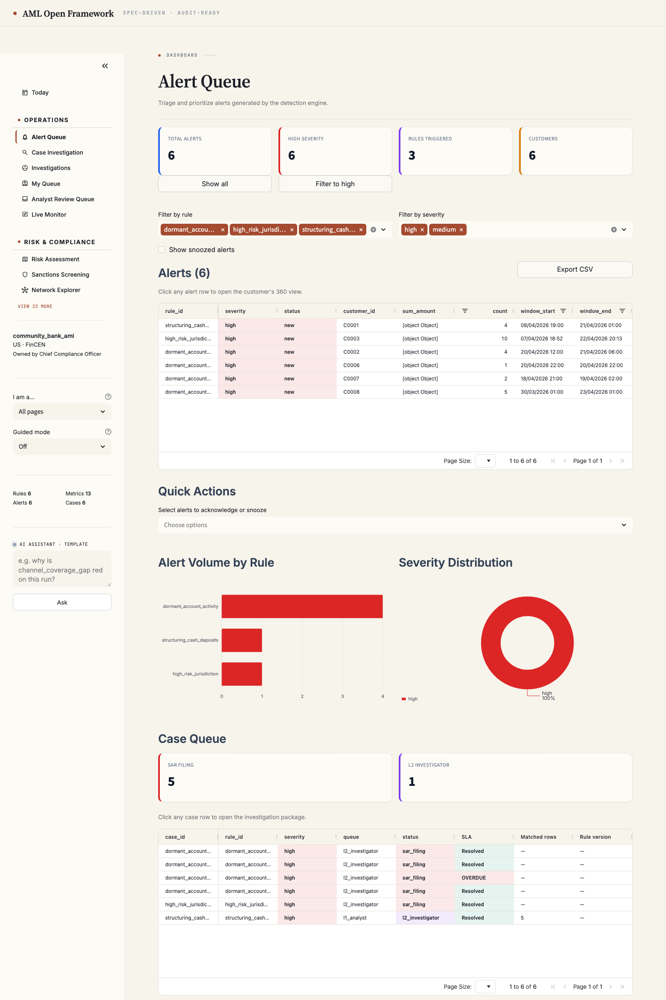
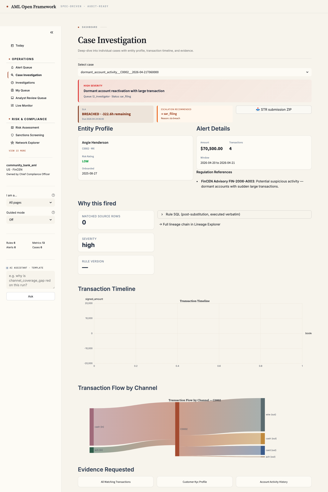
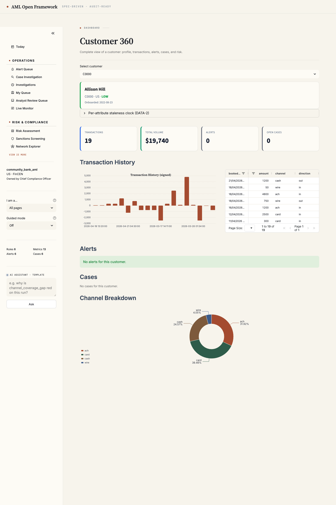

Tuesday morning, 9:14 a.m. — what the analyst actually sees.
Decks promise; products land. Below are four real surfaces from the bundled dashboard, captured against the synthetic community-bank spec on a fresh checkout. Same colour discipline across every page; every row, every chart, every cell traces back to the Compliance Manifest.
9:14 am · ALERT QUEUE

L1 analyst opens the queue
Severity-coloured triage table. Click any row → opens the case. No selectbox-below-table; the triage IS the table.
9:18 am · CASE INVESTIGATION

Analyst opens one case
Why this fired + entity profile + transaction timeline + channel-flow Sankey + draft STR narrative — one page, no system-hopping.
9:31 am · CUSTOMER 360

Analyst pulls customer context
Per-attribute freshness clock — every KYC field carries its own staleness colour. The DATA-2 whitepaper claim, operational.
9:42 am · NETWORK EXPLORER

Analyst checks the neighbourhood
Ego-network walks — component-size, shared-attribute typologies. Mermaid graph rendered live; topology hash dedupes recurring rings.
Key takeaway
Twenty-eight more pages exist behind these four — Audit & Evidence, Lineage Explorer, Investigations, Tuning Lab, Spec Editor, BOI Workflow, AI Assistant, ISO 20022 Data Integration, and so on. The pitch isn't "we'll build a dashboard." It's "this dashboard is in the repo, runs on a fresh checkout, and is what your team will actually look at on the Tuesday this lands."